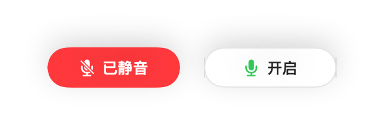
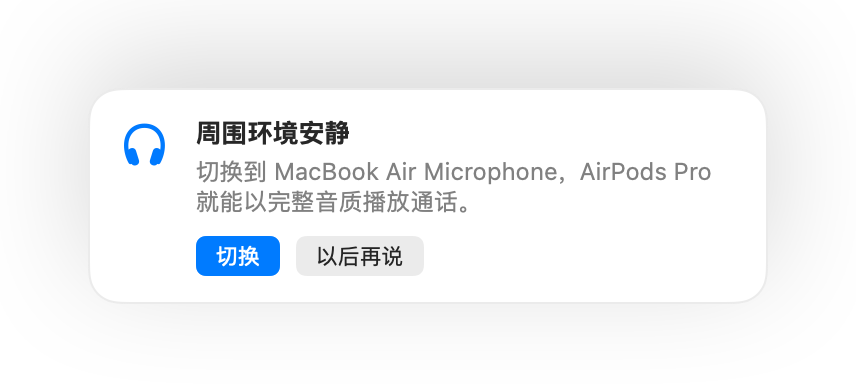
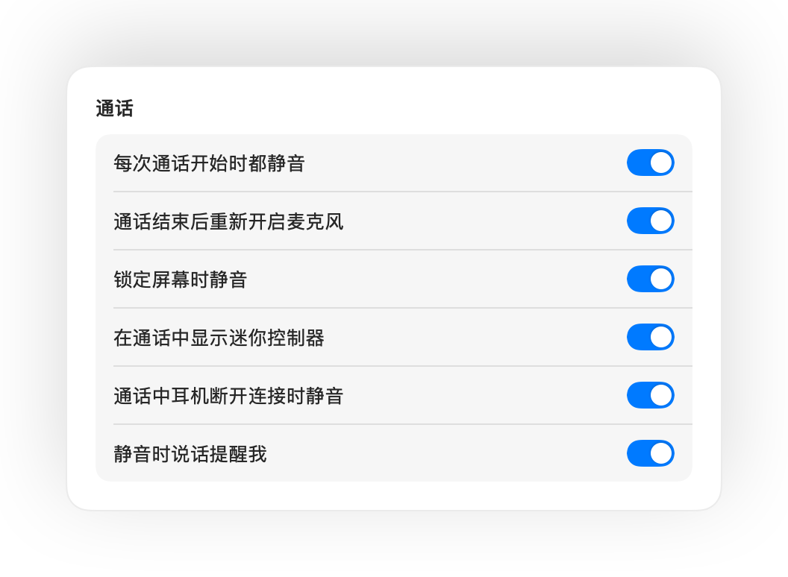

按 AirPods 即可静音
任何通话中按压耳机柄一次即可静音，再按一次取消静音。即使在 Chrome 中也同样好用，轻松解决 Google Meet 等网页版通话忽略 AirPods 按压的问题。
Mac 版 Muffle
只需按压 AirPods 或按下键盘快捷键。Muffle 会在硬件层面直接关闭麦克风，让 Google Meet、Zoom、Teams、Slack 等所有 App 都听不到任何声音。
免费试用 3 天，之后一次性购买，无需订阅。 适用于 macOS 14 Sonoma 及更高版本。
直接在菜单栏中静音、选取麦克风、锁定音量，以及开启或关闭各项功能。
Muffle 会在硬件层面将麦克风静音，因此无论哪个 App、浏览器或网页标签页在使用话筒，都能彻底静音。
在任何通话中按压耳机柄，Muffle 会直接关闭麦克风本身，让 Meet、Zoom、Teams 以及其他所有 App 都听不到任何声音。
Muffle 能识别你的声音并及时提醒，避免你对着空气讲完整段想法。

大多数静音按钮只能将单个 App 静音。Muffle 会直接关闭麦克风本身，让 Mac 上的每个 App 接收到的都是静音。
任何通话中按压耳机柄一次即可静音，再按一次取消静音。即使在 Chrome 中也同样好用，轻松解决 Google Meet 等网页版通话忽略 AirPods 按压的问题。
静音时说话会收到提醒，Muffle 会及时提示你，避免你滔滔不绝说了半天才发现无人听到。

按下 Control-Option-M 即可随处静音，即使视频会议网页隐藏在后台标签页也能生效。静音时按住即可说话，松开后再次静音。
通话中显示迷你浮动控制器，直观展示话筒开启或静音状态。点按即可切换静音。

自由选择快捷键的使用方式：轻按切换、按住说话，或在咳嗽时按住静音。你也可以设置独立的静音与取消静音按键，或直接按住单个按键（如右 ⌥ 或额外的鼠标按键）。

取消静音只为说一句话？如果在你设定的时间内保持安静，Muffle 会自动再次静音。仅计算你的说话声，键入声或背景噪音均不计入。
在安静的房间里使用 AirPods 时，Muffle 会建议使用 Mac 的麦克风，让 AirPods 能以完整音质播放通话。当周围变嘈杂时，它会建议切换回 AirPods 麦克风。

Chrome、Zoom 和 Teams 经常会自动调整麦克风音量。使用锁定功能后，Muffle 会自动恢复预设音量。
每次通话开始时都静音，通话结束后自动重新开启麦克风，锁定 Mac 屏幕时也会自动静音。

如果耳机在远程办公通话中突然断电，Muffle 会在切换到 Mac 内建麦克风前自动静音，防止室内声音意外传出。
可通过“快捷指令” App、Siri、Stream Deck、Raycast 或控制中心按钮快速将麦克风静音。
屏幕边缘闪烁绿光或红光、彩色菜单栏图标、悬浮按钮，以及可按麦克风单独关闭的提示音。随心开启你喜欢的方式。
Muffle 绝不会录制、存储或发送任何音频。它仅用于开关麦克风以及检测音量大小。无账号系统，无数据分析，无追踪行为。
从 Mac App Store 安装 Muffle，并允许麦克风访问权限。
像平常一样在任意 App 中加入通话或视频会议。
按压 AirPods、按下 Control-Option-M 或点按菜单栏图标即可静音。
支持。Chrome 本身不会将 AirPods 的静音按压操作传递给网页通话，而 Muffle 会截获该操作并直接将麦克风静音。浏览器标签页中的任何通话同样适用。
你的通话 App 界面可能仍显示麦克风开启，因为 Muffle 关闭的是系统硬件麦克风，而不是软件内的静音按钮。无论如何，对方都听不到你的声音。静音时，菜单栏中的 Muffle 图标会变为红色。
支持 AirPods Pro、AirPods 3 及更新机型、AirPods Max，以及带有通话控制功能的 Beats 机型。键盘快捷键和菜单栏控制则适用于所有麦克风。
支持。Muffle 适用于 Mac 上所有使用麦克风的软件，无论是桌面客户端还是网页端通话均能完美兼容。
不需要。你可以免费试用全部功能 3 天，之后只需一次性购买即可永久解锁 Muffle。
macOS 只会将 AirPods 按压操作传递给正在使用麦克风的 App，因此 Muffle 需要在通话期间保持一条静音连接。此过程绝不会录制任何内容。
Muffle 在退出时会自动重新开启麦克风，确保你的话筒不会一直保持无声。
支持 macOS 14 Sonoma 及更高版本。控制中心按钮功能需要 macOS 26 或更高版本。
支持。在设置中选择“按住说话”，即可按住快捷键说话。你也可以按住单个按键（如右 ⌥ 或 fn）或额外的鼠标按键。
当通话使用 AirPods 麦克风时，AirPods 会切换到通话模式，播放音质会随之降低。在安静的房间里，Muffle 会建议改用 Mac 的麦克风，让 AirPods 始终以完整音质播放声音。
不会。Muffle 通过 Apple 的设备端声音分析技术识别语音，因此仅计算说话声。键入声、点击声和背景噪音均不计入，且不会进行任何录音。
Muffle 提供 3 天免费试用。